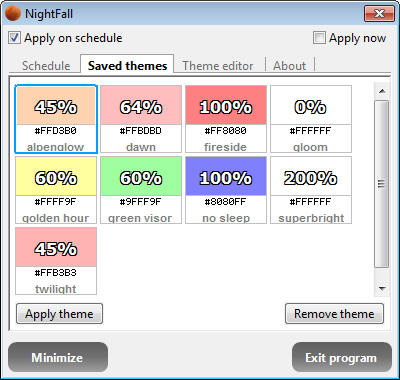

Screen color dimmer for nocturnal hours
Index
Downloads
Screenshots
View the Project on GitHub suurjaak/NightFall
Schedule screen:
Schedule screen when theme applied:
Schedule screen when theme suspended:
Saved themes screen:

Theme editor screen: